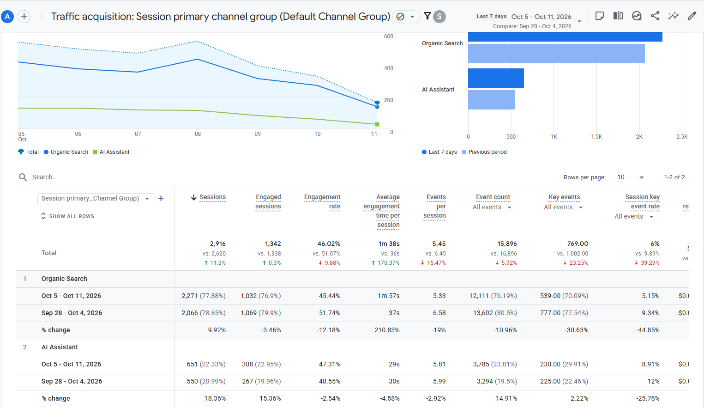
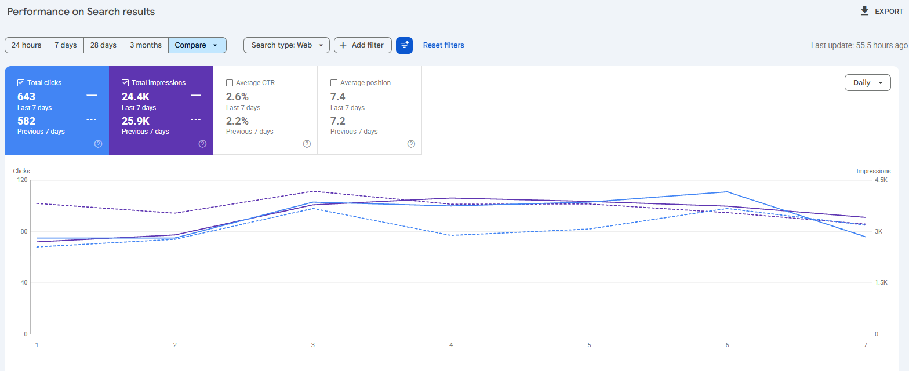
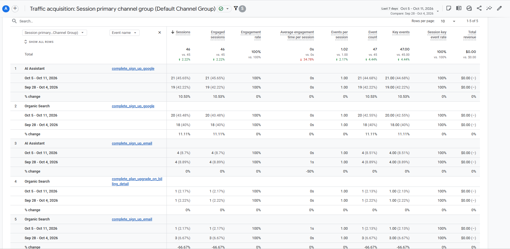
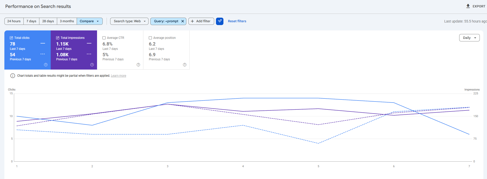
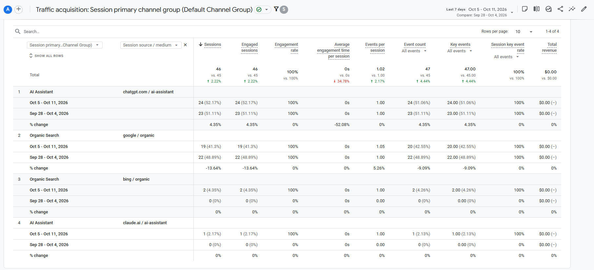
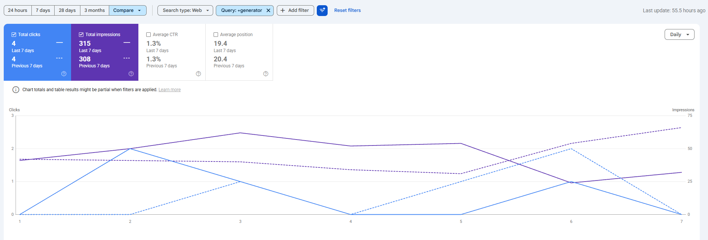
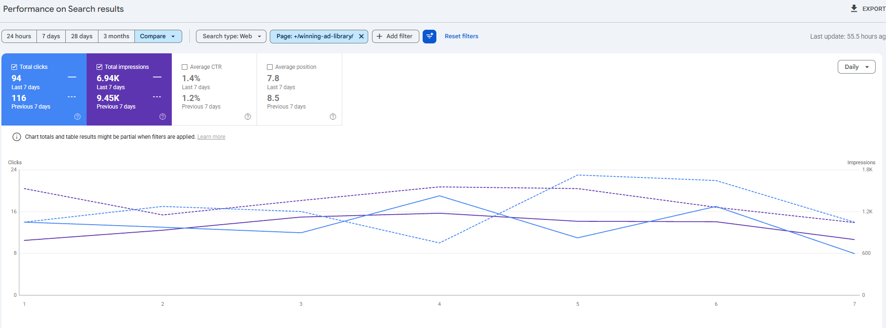

Promer
Báo cáo tuần · 5–11/10/2026
SEO & AI Search
Người dùng đang tìm thấy Promer từ đâu, điều gì đang hiệu quả, và tuần tới làm gì.
Nguồn: GA4 (5–11/10) · Google Search Console (7 ngày gần nhất) · so với 7 ngày trước
Hiện trạng · GA4 · 5–11/10
Traffic từ Organic Search và AI Assistant
Organic Search · sessions
2,271
tuần trước 2,066 · +9.9%
AI Assistant · sessions
651
tuần trước 550 · +18.4%
Engagement rate
45.4% · 47.3%
tuần trước 51.7% · 48.6%

Ý nghĩa: cả hai kênh đều tăng traffic, AI Assistant tăng nhanh hơn (+18% so với +10%).
Promer · SEO Weekly 5–11/10/2026 · 2
Hiện trạng · Search Console · 7 ngày gần nhất
Click từ Google tăng 10% dù lượt hiển thị giảm
Click
643
tuần trước 582 · +10%
Impressions
24.4K
tuần trước 25.9K · −6%
CTR · vị trí TB
2.6% · 7.4
tuần trước 2.2% · 7.2

Ý nghĩa: ít lượt hiển thị hơn nhưng nhiều click hơn, vì CTR tăng từ 2.2% lên 2.6%.
Promer · SEO Weekly 5–11/10/2026 · 3
Hiện trạng · Đăng ký
46 đăng ký mới từ Organic và AI
AI Assistant
25
tuần trước 23 · ChatGPT 24, Claude 1
Organic Search
21
tuần trước 21 · Google 19, Bing 2
Trả tiền
1
nâng gói, từ Organic (tuần trước 1)

Ý nghĩa: tỷ lệ đăng ký từ AI Assistant ~3.8%, Organic ~0.9%. Organic tăng traffic nhưng số đăng ký giữ nguyên.
Promer · SEO Weekly 5–11/10/2026 · 4
Win 1
Từ khoá "prompt" tăng 44% click, CTR 6.8%
Click
78
tuần trước 54 · +44%
Impressions
1.15K
tuần trước 1.08K
CTR · vị trí TB
6.8% · 6.2
tuần trước 5% · 6.9

Ý nghĩa: nhóm "photoshoot prompt" tiếp tục dẫn đầu: 18 click so với 8 tuần trước.
Promer · SEO Weekly 5–11/10/2026 · 5
Win 2
ChatGPT mang về gần như toàn bộ đăng ký từ AI
Đăng ký từ ChatGPT
24
trên 25 của AI Assistant (Claude 1)
Cách đăng ký (AI)
21 · 4
Google login · email
Tỷ lệ đăng ký AI
~3.8%
Organic ~0.9%

Ý nghĩa: ChatGPT là nguồn đăng ký ổn định (24, tuần trước 23), chuyển đổi tốt hơn Organic khoảng 4 lần.
Promer · SEO Weekly 5–11/10/2026 · 6
Vấn đề
Từ khoá "generator" vẫn ở trang 2
Vị trí TB
19.4
tuần trước 20.4 · query "prompt" 6.2
Impressions
315
tuần trước 308
Click · CTR
4 · 1.3%
tuần trước 4 · 1.3%

Ý nghĩa: nhu cầu "generator" ổn định nhưng chưa lên được trang 1; 7 landing page theo ngành nhắm vào nhóm này.
Promer · SEO Weekly 5–11/10/2026 · 7
Cơ hội 1
Google đã hiển thị Promer cho 7 nhóm từ khoá "generator", nhưng sai trang
| Nhóm từ khoá | Hạng hiện tại | Google đang hiển thị |
|---|---|---|
| perfume product image generator | 3.5–5.9 | một mẫu quảng cáo lẻ |
| jewelry lifestyle image generator (+ pendant, text to jewelry) | 2–7 | một mẫu quảng cáo lẻ |
| lingerie generator | 5 | một mẫu quảng cáo lẻ |
| ai underwear generator | 7 | một mẫu quảng cáo lẻ |
| etsy product photo generator | 4 | một bài blog |
| instagram story ad generator | 18–29 | trang Instagram ad generator |
| ai ad variations generator | 14–24 | trang Ad Concept |
Giải pháp: 7 landing page riêng, design trong tuần 12/10. Lượng tìm kiếm còn nhỏ (~88 lượt hiển thị / 28 ngày, 0 click), nên đây là bài test để nhân rộng cách làm.
Promer · SEO Weekly 5–11/10/2026 · 8
Cơ hội 2
Thư viện quảng cáo: click giảm do ít lượt hiển thị
Click
94
tuần trước 116 · −19%
Impressions
6.94K
tuần trước 9.45K · −27%
CTR · vị trí TB
1.4% · 7.8
tuần trước 1.2% · 8.5

Giải pháp: mỗi ngành một bài blog → thư viện → app. Prompt: nước hoa, giày · Ý tưởng: nội thất, bánh, son.
Promer · SEO Weekly 5–11/10/2026 · 9
Cơ hội 3
Nội dung theo mùa
ĐÃ VIẾT
Black Friday
Cyber Monday
TIẾP THEO
Halloween · 31/10
Christmas · 25/12
Hướng làm: mỗi dịp một bài "ý tưởng / prompt quảng cáo", dẫn về thư viện quảng cáo và vào app.
Promer · SEO Weekly 5–11/10/2026 · 10
Next steps · tuần 12–16/10
Việc tuần tới
- Design 7 landing page "generator" trên Figma, dùng template có sẵn của Product Design
- Research từ khoá và lên bài seasonal tiếp theo: Halloween, Christmas
- Chọn hướng bài cho từng ngành trong thư viện quảng cáo: prompt hay ý tưởng quảng cáo
- Product team: hoàn thành các bài review đối thủ (T5 15/10), sau đó chuyển sang bài theo ngành
Promer · SEO Weekly 5–11/10/2026 · 11